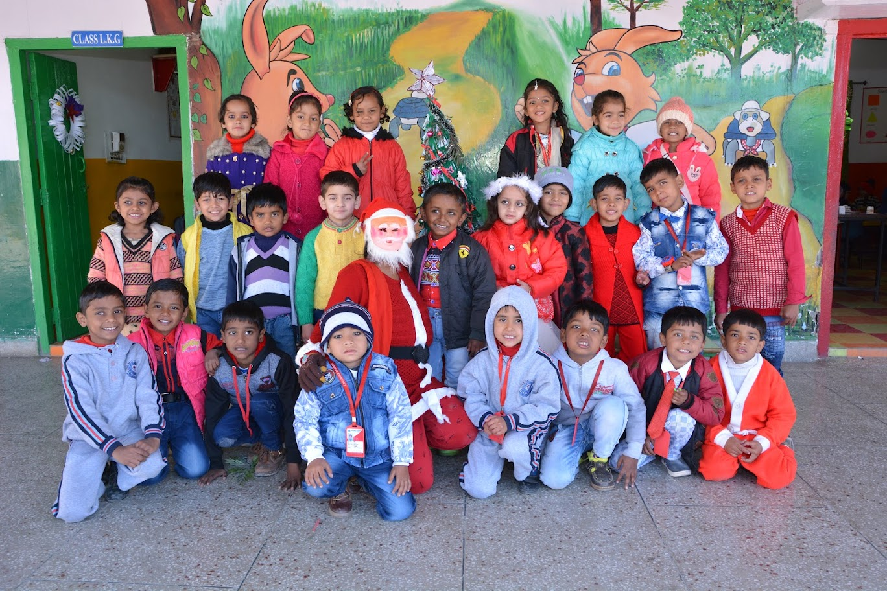

Pre-Primary School Program
In the Junior and Kindergarten years, emphasis is placed equally on children's intellectual, physical and social development. Children learn through games, songs, creative craft work, stories, role play and early numeracy activities.